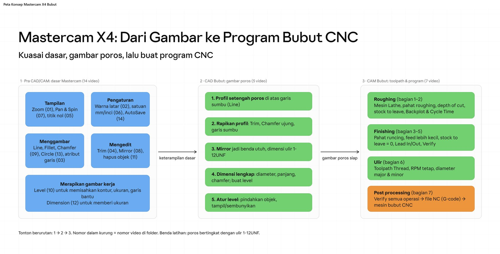

Klik Salin pada tiap topik untuk menyalin judul dan pokok bahasannya, misalnya ke kolom topik SIAKAD. Urutan belajar: Pra CAD/CAM → CAD Bubut → CAM Bubut.
Peta konsep

26 topik dalam tiga tahap: dasar-dasar Mastercam (Pra CAD/CAM), menggambar benda bubut (CAD), dan membuat toolpath sampai program CNC (CAM).
